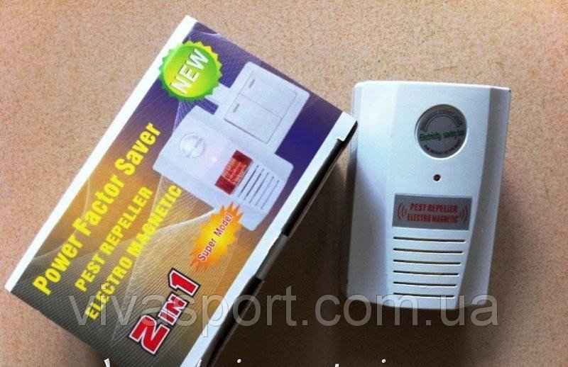

Характеристики некоторых энергосберегающих устройств

- Устройство, питающее осветительную сеть через выпрямительные диоды;
- Устройство, включающее освещение в зависимости от величины освещенности на улице;
- Устройство, включающее освещение от датчика движения;
- Устройство программного включения освещения;
- Устройство, включающее освещение кратковременно по нажатию кнопки;
- Устройство управления освещением в зависимости от уровня освещенности и наличия людей;
- Результаты эксплуатации энергосберегающего устройства ЭВО-01.
В статье кратко рассматриваются достоинства и недостатки различных способов и реализующих их устройств снижения энергопотребления светильниками в подъездах, других местах общественного пользования. Результаты анализа базируются на информации рекламных материалов, технической документации, собственных экспериментальных исследований сотрудников НПМП «Связьэнергосервис».
1. Устройство, питающее осветительную сеть через выпрямительные диодыПринцип: питание осветительных приборов только в течение одного полупериода выпрямленного переменного напряжения снижает энергопотребление.
Достоинства:- Низкая стоимость;
- Простота монтажа (монтируется один блок на один дом);
- Частично исключается хищение электричества через осветительную сеть;
- Увеличение ресурса лампочек.
- Не исключается работа осветительных приборов в светлое время суток;
- Снижение освещенности примерно в 2,5 раза: увеличивается излучение в инфракрасном диапазоне (проверено экспериментально);
- Экономия электроэнергии составляет всего 30% вопреки устоявшемуся мнению о 50%-й экономии (снижается температура нити ламп накаливания, снижается ее сопротивление и эффективное значние тока снижается только на 30%, проверено экспериментально);
- Невозможно использовать лампы дневного света;
- Требует контроля и выключения в дневное время.
Принцип: питание осветительных приборов осуществляется под управлением фотоприемника в темное время суток.
Достоинства:- Низкая стоимость (один фотоприемник и один коммутатор напряжения на дом);
- Небольшой объем монтажных работ;
- Освещение включается только в темное время суток;
- Высокая «вандалостойкость» (коммутатор находится в электрощитовой, фотоприемник – в труднодоступном месте).
- Освещение работает непрерывно всю ночь, вне зависимости от нахождения людей в подъезде, на лестничных площадках;
- При своевременном выключении жильцами освещения днем экономия отсутствует;
- Не учитываются индивидуальные особенности освещенности лестничной площадки (возможно отсутствие окон и необходимость освещения днем).
Принцип: осветительный прибор, как правило, совмещенный с датчиком движения, устанавливается на каждой лестничной площадке. При перемещении человека в зоне действия датчика включается освещение.
Достоинства:- Высокая экономичность.
- Ограниченный сектор действия датчика;
- Низкая «вандалостойкость»;
- Не учитываются индивидуальные особенности освещенности лестничной площадки;
- Необходимость выключения в дневное время.
Принцип: микропроцессорное устройство включает и выключает освещение в установленное время с учетом календарного времени восхода и захода солнца.
В устройстве может применяться также ограничение по мощности для предотвращения хищения электроэнергии.
Достоинства:- Простота монтажа (монтируется один блок на один дом);
- Частично исключается хищение электричества через осветительную сеть;
- Высокая «вандалостойкость» (все оборудование находится в электрощитовой).
- Освещение работает непрерывно всю ночь, вне зависимости от нахождения людей в подъезде;
- Относительно невысокая экономия электроэнерги;
- Включение освещения не по реальной освещенности, а по прогнозируемой.
Принцип: освещение включается по нажатию кнопки на время, необходимое для прохождения освещаемого участка на каждом этаже.
Достоинства:- Высокая экономичность.
- Большой объем монтажных работ;
- Неудобство в пользовании (как правило, одна кнопка на лестничной клетке, к которой в темноте надо дойти).
Применение этого подхода целесообразно в новых домах, где проводка под данную систему закладывается в проекте.
6. Устройство управления освещением в зависимости от уровня освещенности и наличия людейПринцип: освещение включается при отсутствии (низком уровне) освещения и наличия людей, обнаруживаемых по звуку (открывающаяся дверь, шаги, голос и.т.д.).
Выключается освещение через фиксируемое время при отсутствии звукового фона. Устройство располагается внутри светильника или в непосредственной близости от него.
Достоинства:- Высокая «вандалостойкость»;
- Относительная простота монтажа;
- Максимальная экономия электроэнергии.
- Относительно высокая стоимость.
Максимальная экономия электроэнергии при соблюдении санитарных норм освещения обеспечивается устройствами локального (для каждого подъезда, площадки) автоматического управления освещением на основе контроля естественной освещенности и наличия людей в освещаемой области.
Результаты экспериментальной эксплуатации энергосберегающегоустройства – электронного выключателя освещения ЭВО-01
Устройство ЭВО-01устанавливалось на лестничных площадках первого и последнего (десятого) этажей двух подъездов жилого дома, отличающихся планировкой и условиями естественного освещения. Достигаемая экономия электроэнергии при использовании устройства ЭВО-01 оценивалась сравнением суммарного времени включенного состояния светильника и общего времени включения освещения подъезда (ориентировочно с 20.00 вечера до 7.00 утра). Время работы светильника измерялось электрическим счетчиком времени, включенным параллельно светильнику.
В результате проверки установлено:- При общем времени включения освещения подъезда 10-11 часов светильники с устройством ЭВО-01 работали в течение 4-5 часов на первом этаже и 2-3 часов на десятом этаже;
- В дневное время при включенном освещении подъезда светильники одного из подъездов не включались вообще по причине достаточности естественного освещения. В другом подъезде светильник на десятом этаже не включался, на первом этаже со слабым естественным освещением суммарное время включения составило 1-2 часа за время контроля 12 часов.
Таким образом, в зависимости от места установки светильника экономия электроэнергии в ночное время составила от 50% до 80%. В предположении отсутствия контроля за освещением со стороны жильцов или работников обслуживающей организации и включения его в дневное время необоснованный расход электроэнергии при использовании устройства ЭВО-01 может быть снижен на 85-100%.